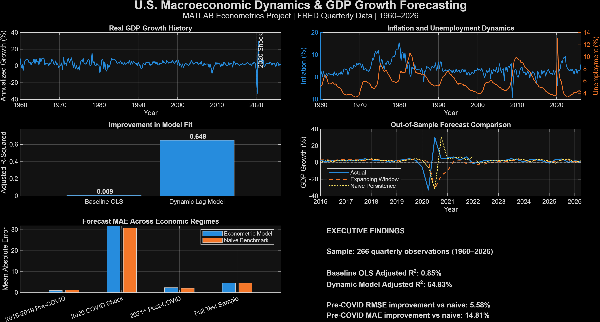
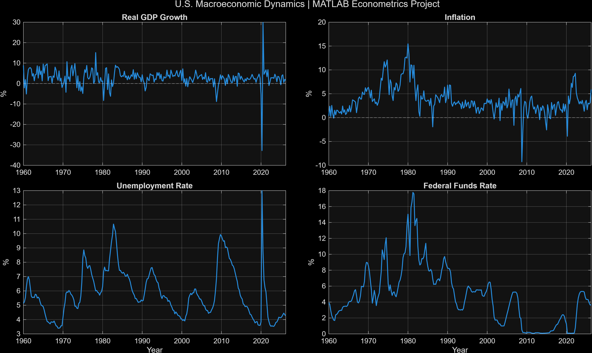
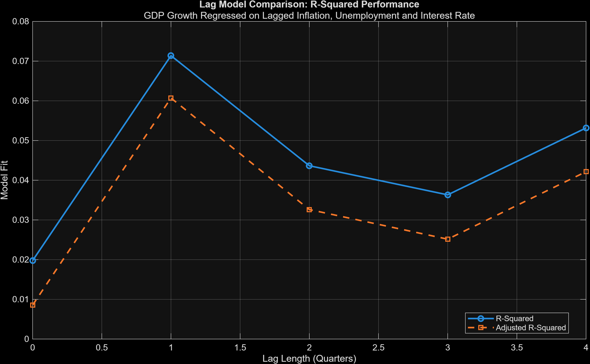
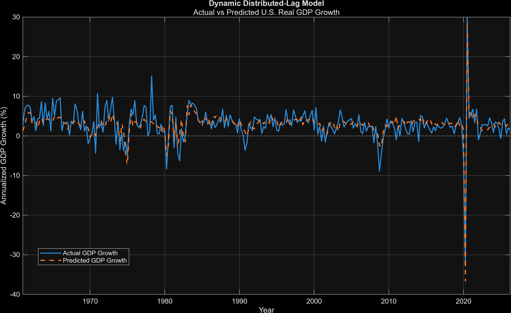
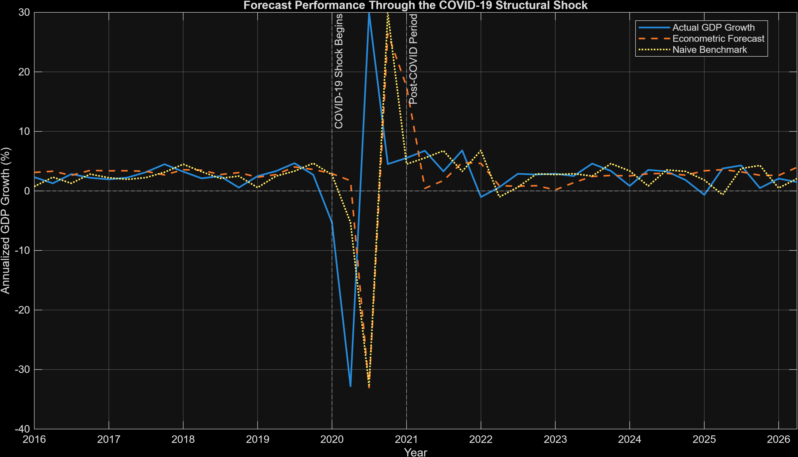
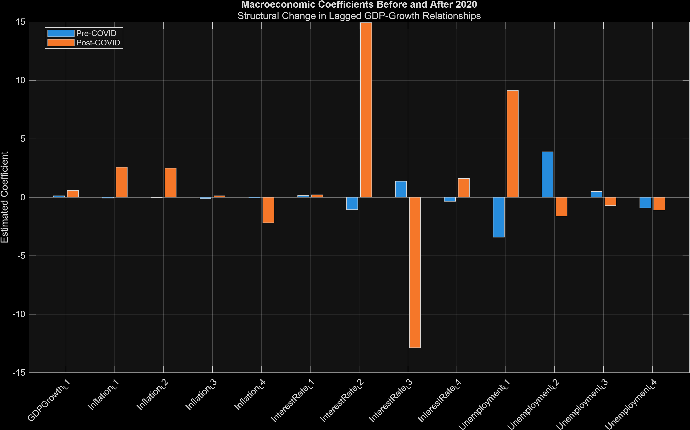
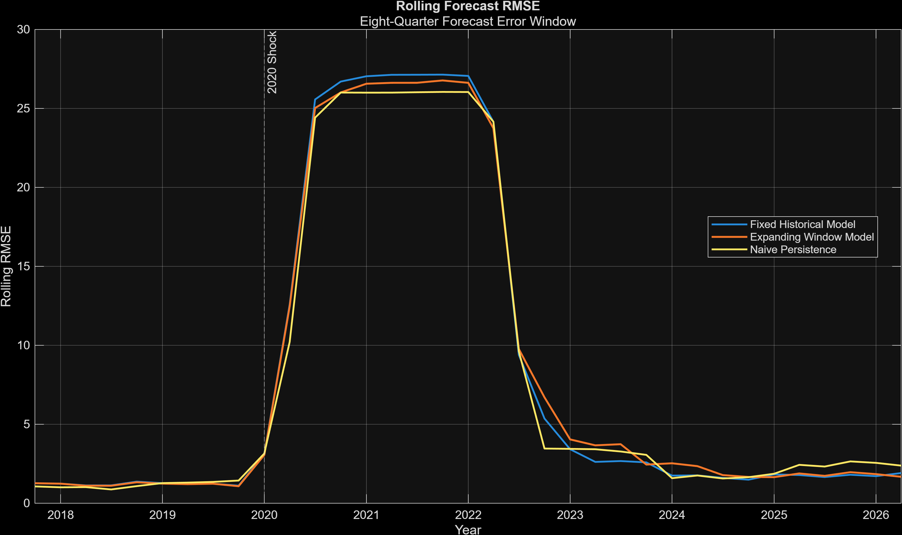

01
Static OLS was weak
Same-quarter inflation, unemployment and interest rates explained little quarterly GDP-growth variation. Baseline R² was only 1.98%.
An end-to-end econometric study of growth, inflation, unemployment, interest rates, structural instability and out-of-sample forecasting using more than six decades of U.S. macroeconomic data.
This project investigates how U.S. real GDP growth interacts with inflation, unemployment and monetary-policy conditions over time. The analysis begins with a simple contemporaneous OLS model, progressively introduces lag structures, and then tests those models on genuinely unseen data.
The core finding is intentionally nuanced: dynamic lag structures explain historical variation far better than a static regression, yet the 2020 shock exposes substantial instability and weakens forecast generalization.
How do inflation, unemployment, interest rates and prior economic conditions relate to real GDP growth — and do those relationships remain useful for forecasting future growth?

Same-quarter inflation, unemployment and interest rates explained little quarterly GDP-growth variation. Baseline R² was only 1.98%.
Distributed lags dramatically improved historical fit, lifting adjusted R² to 64.83%.
The high-fitting dynamic specification did not dominate a simple persistence benchmark over the complete unseen post-2016 sample.
During 2016–2019, the econometric model reduced MAE by 14.81% and RMSE by 5.58% versus persistence.
A Chow-style test produced F = 12.43 with p < 0.001, indicating strong parameter instability around the pandemic shock.
Expanding-window re-estimation improved RMSE slightly relative to the fixed model, but persistence remained the best full-sample benchmark.






Federal Reserve Economic Data (FRED): Real GDP GDPC1, Unemployment UNRATE, CPI CPIAUCSL, and Federal Funds Rate FEDFUNDS.
OLS regression, VIF, Durbin–Watson, residual diagnostics, distributed lags, out-of-sample validation, benchmark comparison, structural-break testing, and expanding-window estimation.